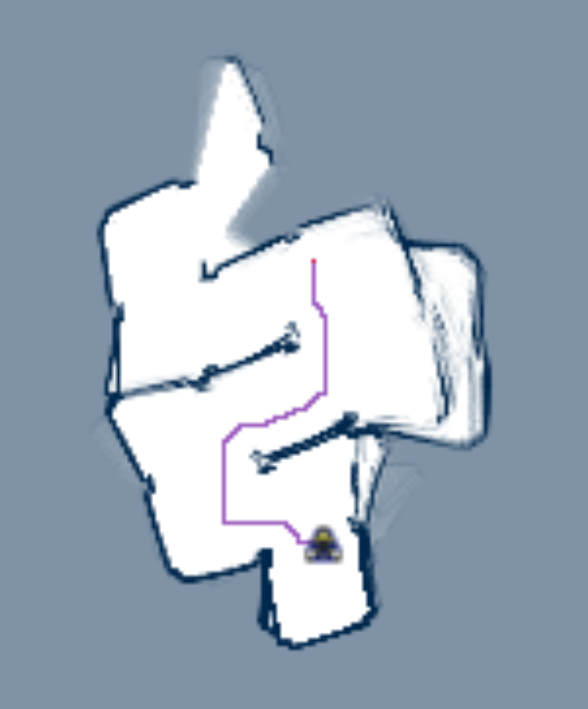

path = []
cell_queue = []
cell_queue.push(start)
costs = {}
costs[start] = 0
parents = {}
while (cell_queue is not empty) {
current = pop index 0 from cell_queue
if current == goal
break
for each neighbor of current {
if (neighbor not in parents and neighbor != start and neighbor not occupied) {
parents[neighbor] = current
costs[neighbor] = costs[current] + 1
push neighbor onto cell_queue
}
}
}
path = trace path from goal, following parents backwards, then reversed
Algorithm Test Output

Discussion
I implemented a simple breadth first search on cells in this project.
These cells were small (<1cm) divisions in a 2D square grid.
Due to missing a class and spending one full class period doing an irrelevant math problem,
I didn't have time to implement much more than that.
But, there's a lot of ways to improve this project:
Fast distance transform.
The robot needs to calculate each cell's distance away from the nearest obstacle in order to steer clear of them.
It didn't even occur to me that this could be done in linear time until I read the paper.
This might be the what the instructors already use to implement checkCollision.
A-star search algorithm.
This search algorithm uses a heuristic (in this case Euclidean distance from the goal) to pick more promising cells to search first, hopefully shortening the amount of time taken to calculate a path to the goal.
I started implementing this and then commented it out when I found out there were a couple problems and still hadn't tested BFS yet.
Path optimization.
The reliance on cells, whose neighbors are those adjacent, in the first place, necessarily leads the algorithm to believe all solutions whose Manhattan distances are the same are equivalently good. The robot does not optimize for shortest Euclidean distance. Perhaps after a path is found, a separate optimization step could be done which does just this.